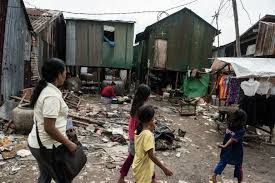
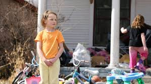

Welcome
Why is poverty important to be aware of?
Poverty affects not just individuals, but entire communities and societies.From the health care cost to the crime rate; everyone is effected.
Poverty also reduces economic growth and stability. Individuals with low incomes have limited purchasing power, which decreases demand for goods and services and reduces tax revenue.
Scratch Game
Resource Pantry
Get Involved
You can get involved by volunteering or donating to local organizations.
Advocate for policy changes that address root causes of poverty.
Educate yourself and others about poverty and its effects.
How Do People Live in Poverty
Many people living in poverty struggle to meet basic needs like food, shelter, and healthcare.
They often face unstable employment, limited access to education, and inadequate housing conditions.
Social exclusion, lack of public services, and high costs make daily life and escaping poverty much harder.
